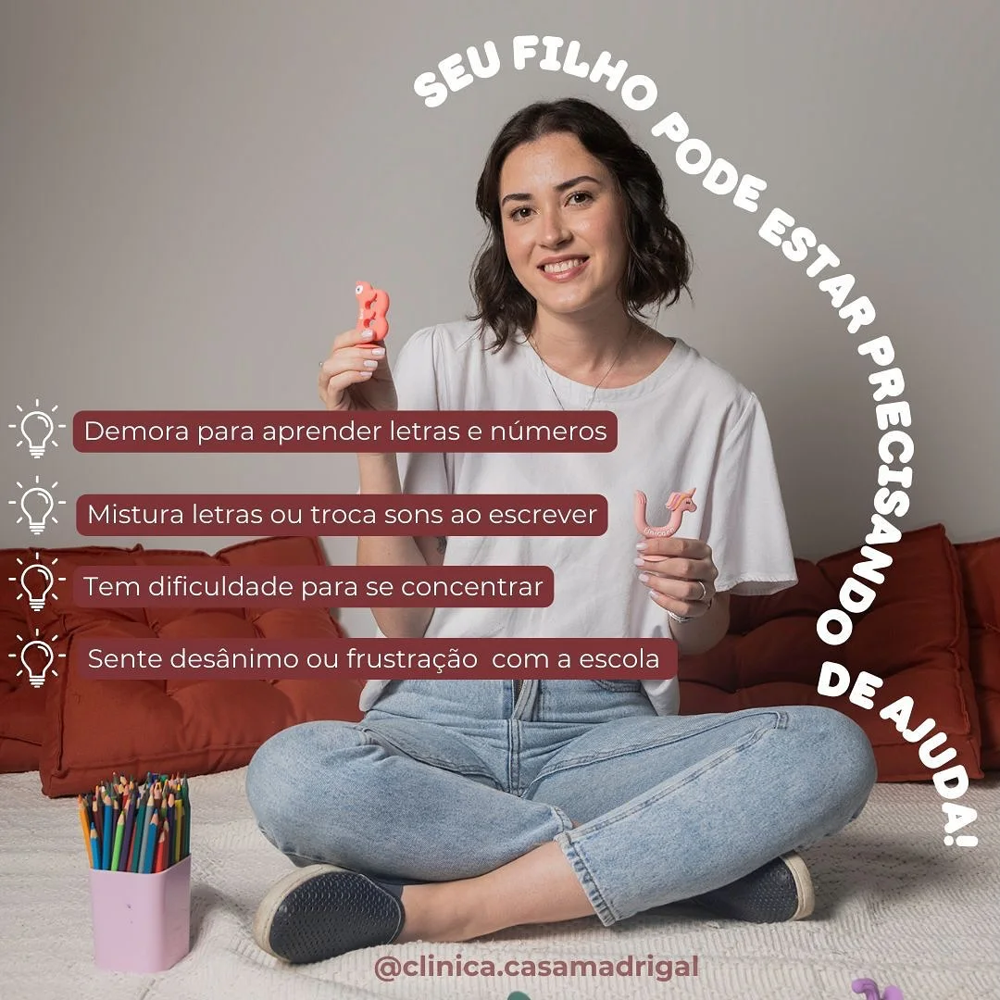
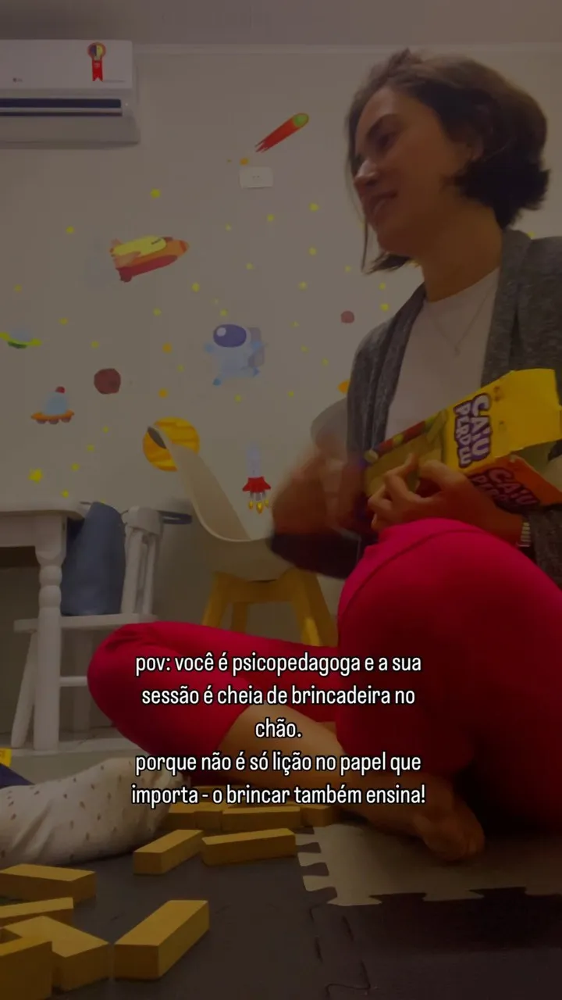
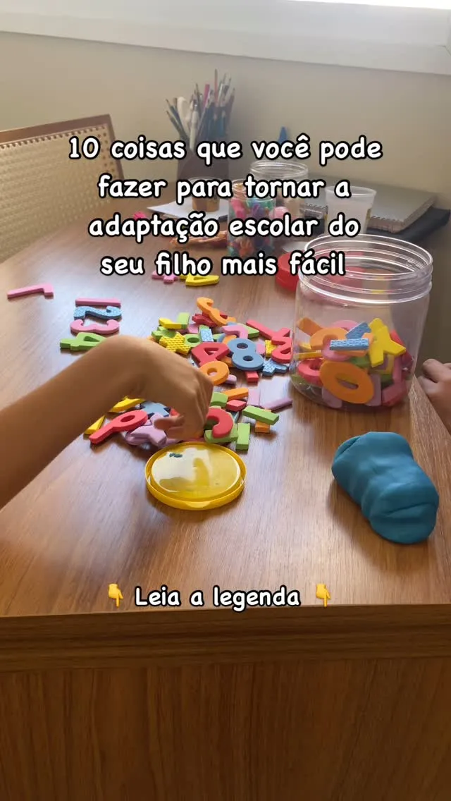
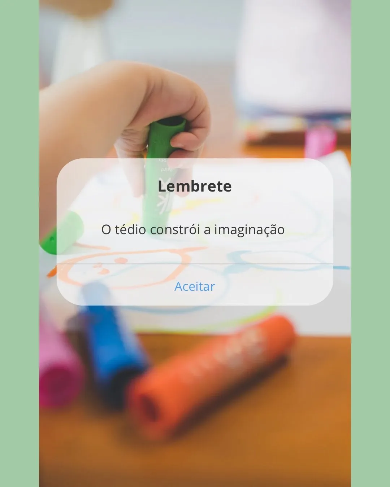

Uma conversa com a família
Vocês me contam a história do seu filho, a rotina, o que a escola tem dito e o que mais preocupa. Sem pressa e sem julgamento.
Prévia exclusiva
Preparamos este projeto pensando no seu trabalho com as crianças. Digite a senha que enviamos no WhatsApp pra abrir a prévia.
Senha incorreta. Confira a mensagem no WhatsApp e tente de novo.
Prévia Já · sites profissionais no ar em 48 horas
Bem-vinda, Victoria!
Abrindo a sua prévia…Psicopedagogia infantil · Jardins, São Paulo
Quando a escola vira choro, lição vira briga e a criança começa a dizer que "não consegue", eu ajudo a sua família a entender o porquê e a encontrar o caminho. Com afeto, escuta e muita brincadeira.

Você já ouviu (ou disse) alguma dessas?
"Ele chora toda vez que chega a hora da lição."
"A professora disse que ela não presta atenção."
"Ele vive dizendo que é burro."
"Já tentei de tudo e nada funciona."
Teste rápido para pais · 1 minuto
Não é diagnóstico. É um jeito de organizar o que você vem observando.
Toque nos sinais que você reconhece.
Conversar com a Victoria sobre issoComo funciona
Vocês me contam a história do seu filho, a rotina, o que a escola tem dito e o que mais preocupa. Sem pressa e sem julgamento.
Com atividades e brincadeiras, eu observo como ele lê, escreve, calcula, presta atenção e lida com o erro. A criança nem sente que está sendo avaliada.
Com o que descobrimos, monto estratégias pensadas pro jeito único de aprender do seu filho, e explico tudo pra vocês com clareza.
Sessões semanais em que brincar e aprender andam juntos, com retornos frequentes pra família e, quando faz sentido, conversa com a escola.
Na prática
Não é só lição no papel que importa. O afeto, a conexão e o lúdico são a base pra criança se sentir segura pra aprender.



Pra você usar hoje em casa
arrasta pro lado →
Leve a criança pra conhecer a sala e o pátio antes das aulas começarem.
Crie uma rotina clara: hora de dormir, acordar e se arrumar dá segurança.
Evite despedidas longas. Diga que vai voltar, sorria e saia confiante.
Acolha sem minimizar: "Eu sei que é difícil, mas estou aqui com você."
Combine algo especial pro fim do dia: "Depois me conta a parte mais divertida!"

Quem vai acompanhar seu filho
Sou psicopedagoga e trabalho com crianças que enfrentam desafios na leitura, na escrita e na matemática. Acredito que cada pequeno tem um jeito único de aprender, e meu trabalho é descobrir esse jeito junto com a família.
Atendo nos Jardins, em São Paulo, num espaço pensado pra criança se sentir em casa: com tapete, brinquedos e tempo pra ser criança.
com carinho, Victoria
Dúvidas de pais
Se a dificuldade na escola se repete, gera sofrimento ou a professora já comentou, vale conversar. Às vezes é só uma fase; às vezes precisa de um olhar mais atento. A conversa inicial ajuda a entender.
Atividades e brincadeiras pensadas pra idade da criança. Ela não faz "prova": eu observo como ela pensa, lê, escreve e resolve problemas.
Não. Muitas famílias chegam por conta própria. Se a escola fez observações, elas ajudam muito.
O acompanhamento pode começar já no início da alfabetização. Conversamos sobre o momento do seu filho no primeiro contato.
Depende de cada criança. Depois da avaliação eu explico o plano, a frequência das sessões e como vamos acompanhar a evolução.
Me chama no WhatsApp e marque uma conversa inicial. Eu respondo pessoalmente.
Falar com a Victoria no WhatsApp 📍 Alameda Jaú, 72 · Jardim Paulista · São Paulo, SP · ver no mapa ↗